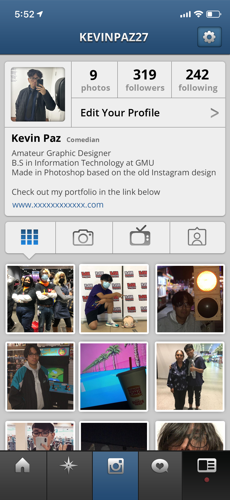
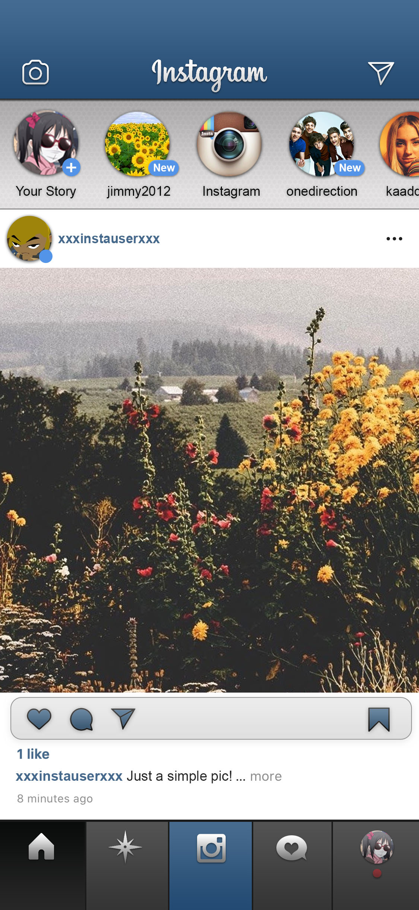
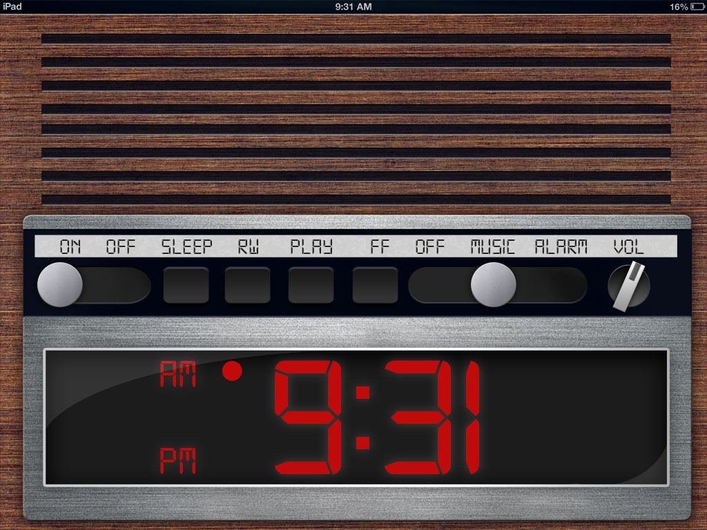

Hello, my name is Kevin Paz and I am a Senior here at George Mason. I am majoring in Information Technology with a concentration in Web Development.
Web Design and Web Development are one of my favorite things to learn and experiment with because it gives me a wide range of tools that I can use to express my creativity and ideas. I am a big fan of design languages and themes such as Skeuomorphism, Y2K, Frutiger Aero, and Metro design. In fact, I based the design for this website on Windows 2000 which I like due to it's simplicity and recognition. I have made other concept designs that I will link below if you would like to see them!
Some of the key skills that I gained through work experiences include:
- Being self-sufficient while still working as a team with other members
- Providing great customer service to all types of customers
- Be a team player and encouraging collaboration in the workplace
- Working under heavy pressure
- Adobe Photoshop
- Python
- Computer Hardware
- Web Design
- Cyber Security
- Database Management
- MacOS / Linux OS
Pictured: Instagram Mockup Design for iPhone X. Based on the older design from 2012. iPad Wooden Clock Design for iPad's Gen 1-4.
  